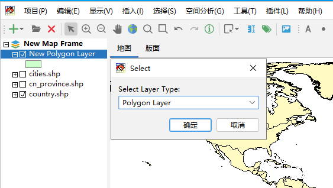
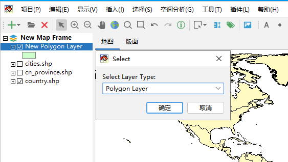

创建图层¶
点击“编辑 -> 创建图层”菜单，在弹出对话框中选择要创建的图层的类型，包括：点图层（Point Layer）、线图层（Polyline Layer） 和多边形图层（Polygon Layer）。这里以多边形图层为例，创建的图层会自动加载到图层管理区，并自定命名为New Polygon Layer。
点击“编辑 -> 创建图层”菜单，在弹出对话框中选择要创建的图层的类型，包括：点图层（Point Layer）、线图层（Polyline Layer） 和多边形图层（Polygon Layer）。这里以多边形图层为例，创建的图层会自动加载到图层管理区，并自定命名为New Polygon Layer。
